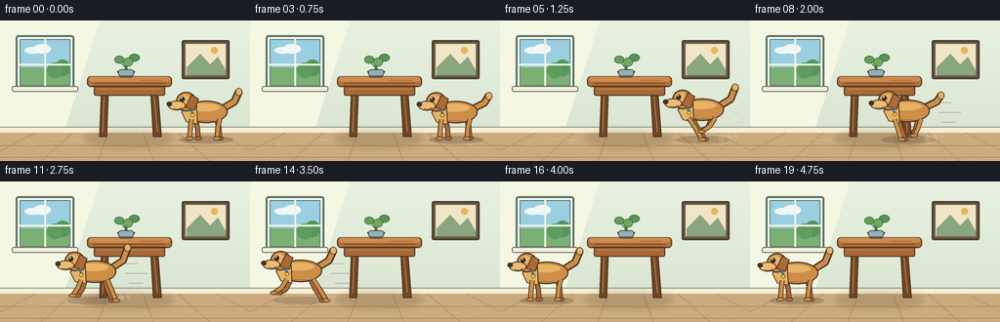
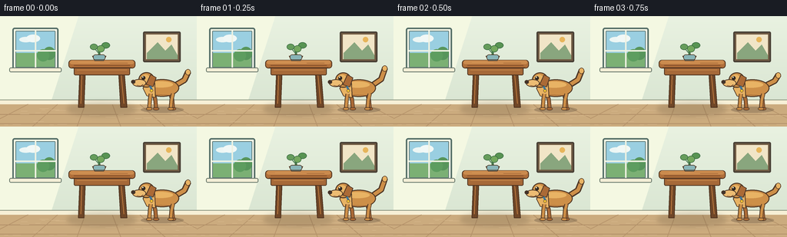

CODING AGENTS AS PIXEL WORLD MODELS
traex/GPT-5.6-Sol · dynamic_spatial_relationship_0002
点击播放 · 原生 RGB 像素
逐轮保存的候选
回放视频、检查图与代码变化。
每份候选均可单独播放。实际图片检查记录在下方工具轨迹中。
候选 01播放与检查图
点击播放 · 原生 RGB 像素


展开代码变化
--- 上一保存版本
+++ 本次保存版本
@@ -0,0 +1,218 @@
+from pathlib import Path
+import math
+import numpy as np
+from PIL import Image, ImageDraw, ImageFilter
+import artifact_io
+
+W, H, N, S = 256, 144, 20, 4
+OUT = Path(__file__).resolve().parent
+rng = np.random.default_rng(12)
+
+def sc(v): return int(round(v*S))
+def box(b): return tuple(sc(v) for v in b)
+def pts(a): return [(sc(x), sc(y)) for x,y in a]
+
+def ellipse(d, b, fill, outline=None, width=1):
+ d.ellipse(box(b), fill=fill, outline=outline, width=sc(width) if outline else 1)
+def polygon(d, p, fill, outline=None, width=1):
+ d.polygon(pts(p), fill=fill)
+ if outline:
+ d.line(pts(p+[p[0]]), fill=outline, width=sc(width), joint='curve')
+def line(d, p, fill, width=1, joint='curve'):
+ d.line(pts(p), fill=fill, width=sc(width), joint=joint)
+def roundrect(d, b, r, fill, outline=None, width=1):
+ d.rounded_rectangle(box(b), radius=sc(r), fill=fill, outline=outline, width=sc(width))
+
+def background():
+ im = Image.new('RGB',(W*S,H*S))
+ a=np.asarray(im).copy()
+ # warm, softly graded plaster wall
+ yy=np.arange(H*S)[:,None]
+ wall=np.zeros((H*S,W*S,3),dtype=np.uint8)
+ top=np.array([233,242,225]); bottom=np.array([218,230,211])
+ g=np.clip(yy/(112*S),0,1)
+ wall[:]=np.clip(top*(1-g[...,None])+bottom*g[...,None],0,255)
+ a[:]=wall
+ im=Image.fromarray(a)
+ d=ImageDraw.Draw(im)
+ # subtle sunlight panel
+ polygon(d,[(0,0),(102,0),(66,112),(0,112)],(244,248,226))
+ # window and sill
+ roundrect(d,(16,15,76,72),3,(248,250,234),(86,111,104),2)
+ roundrect(d,(20,19,72,67),1,(146,202,220),(96,123,121),1)
+ # sky and lawn through window
+ d.rectangle(box((21,20,71,48)), fill=(154,207,225))
+ d.rectangle(box((21,48,71,66)), fill=(123,176,116))
+ # distant cloud/tree
+ ellipse(d,(25,27,42,34),(237,246,244)); ellipse(d,(34,24,52,34),(241,248,246))
+ ellipse(d,(56,40,72,57),(87,149,91)); ellipse(d,(48,43,64,59),(93,157,95))
+ # window muntins and sill
+ line(d,[(46,19),(46,67)],(239,242,226),2)
+ line(d,[(20,45),(72,45)],(239,242,226),2)
+ roundrect(d,(12,67,80,73),2,(244,239,215),(97,113,101),1)
+ # framed minimal landscape on right
+ roundrect(d,(186,20,235,60),2,(113,91,67),(74,65,54),2)
+ d.rectangle(box((190,24,231,56)),fill=(241,229,199))
+ polygon(d,[(191,48),(205,34),(215,45),(223,37),(231,51),(231,56),(191,56)],(137,166,126))
+ ellipse(d,(216,27,223,34),(231,181,91))
+ # baseboard and floor
+ d.rectangle(box((0,109,256,115)),fill=(246,239,214))
+ line(d,[(0,109),(256,109)],(139,149,128),1)
+ d.rectangle(box((0,115,256,144)),fill=(203,171,126))
+ # floor boards / perspective seams
+ for y in [128,140]: line(d,[(0,y),(256,y)],(177,143,104),1)
+ for xb in [-20,42,100,157,215,278]:
+ line(d,[(128+(xb-128)*0.62,115),(xb,144)],(181,147,106),1)
+ # irregular wood highlights
+ for _ in range(28):
+ x=float(rng.uniform(0,256)); y=float(rng.uniform(117,143)); ln=float(rng.uniform(4,14))
+ line(d,[(x,y),(min(256,x+ln),y)],(216,185,141),0.45)
+ return im
+
+BG=background()
+
+def draw_table(im):
+ d=ImageDraw.Draw(im)
+ # soft cast shadow
+ shadow=Image.new('RGBA',im.size,(0,0,0,0)); sd=ImageDraw.Draw(shadow)
+ sd.ellipse(box((87,112,177,130)), fill=(75,62,42,45))
+ shadow=shadow.filter(ImageFilter.GaussianBlur(sc(3)))
+ im.paste(shadow,(0,0),shadow)
+ d=ImageDraw.Draw(im)
+ edge=(76,50,31); dark=(111,70,39); wood=(166,105,56); light=(195,132,72)
+ # far legs
+ polygon(d,[(104,67),(111,67),(109,119),(102,119)],dark,edge,1)
+ polygon(d,[(154,67),(161,67),(165,119),(157,119)],dark,edge,1)
+ # feet caps and highlights
+ line(d,[(106.5,72),(105,114)],(194,126,67),1)
+ line(d,[(157,72),(161,114)],(192,124,64),1)
+ # apron under tabletop
+ roundrect(d,(96,65,169,77),2,wood,edge,1)
+ line(d,[(100,70),(165,70)],light,1)
+ # broad tabletop with rounded corners
+ roundrect(d,(89,57,176,68),4,(176,111,58),edge,1)
+ roundrect(d,(91,57.5,174,62.5),3,(203,139,78),None)
+ line(d,[(96,64),(169,64)],(132,78,41),1)
+ # grain
+ line(d,[(102,60),(130,60)],(220,156,91),0.6)
+ line(d,[(143,61),(166,61)],(151,89,47),0.6)
+ # vase and leafy sprig
+ polygon(d,[(127,57),(128,44),(130,44),(131,57)],(73,113,74))
+ line(d,[(129,49),(122,41)],(70,123,75),1)
+ line(d,[(129,48),(136,39)],(70,123,75),1)
+ ellipse(d,(117,36,127,44),(102,157,92),(58,108,66),0.7)
+ ellipse(d,(132,34,143,42),(88,148,83),(58,108,66),0.7)
+ ellipse(d,(126,38,136,47),(116,168,94),(58,108,66),0.7)
+ polygon(d,[(120,52),(138,52),(135,58),(123,58)],(107,151,159),edge,0.8)
+ roundrect(d,(121,50,137,57),3,(137,181,184),edge,0.8)
+ # tabletop front rim last
+ line(d,[(94,67),(171,67)],(88,54,31),1)
+
+def speed_and_dust(im, x, frame, moving):
+ if not moving: return
+ d=ImageDraw.Draw(im,'RGBA')
+ speed=min(1.0, max(0,(frame-4)/3))
+ # motion streaks trail behind dog (to the right)
+ for j,(dy,l) in enumerate([(-10,17),(0,23),(10,14)]):
+ xx=x+27+j*4
+ d.line(pts([(xx,94+dy),(min(252,xx+l*speed),94+dy)]),fill=(120,103,77,int(90*speed)),width=sc(1))
+ # small dust clouds by hind paws
+ for j in range(3):
+ cx=x+20+j*7; cy=121-j*1.5
+ rr=3.5-j*.6
+ d.ellipse(box((cx-rr,cy-rr,cx+rr,cy+rr)),fill=(233,215,178,int(105-25*j)))
+
+def limb(d, attach, knee, paw, color, outline, front=False):
+ line(d,[attach,knee,paw],outline,5.2)
+ line(d,[attach,knee,paw],color,3.5)
+ ellipse(d,(paw[0]-4,paw[1]-2.2,paw[0]+4,paw[1]+1.8),color,outline,0.8)
+
+def draw_dog(im, cx, frame, moving):
+ d=ImageDraw.Draw(im,'RGBA')
+ outline=(78,55,38,255); fur=(205,143,72,255); hi=(232,179,100,255); shade=(171,106,54,255)
+ # running cycle and vertical bounce
+ phase=(frame-4)*1.7 if moving else (0 if frame<4 else 1.4)
+ bob=(-2.2*abs(math.sin(phase))) if moving else (0.35*math.sin(frame*0.8))
+ cy=95+bob
+ ground=122
+ # dog shadow responds to airborne phase
+ ellipse(d,(cx-28,118,cx+28,126),(66,55,43,55 if moving else 65))
+ # tail, high and wagging; dog faces left, tail trails right
+ wag=math.sin(frame*1.35)*5
+ tail=[(cx+17,cy-5),(cx+29,cy-12-wag*.25),(cx+34,cy-23-wag)]
+ line(d,tail,outline,8)
+ line(d,tail,fur,5)
+ ellipse(d,(cx+30,cy-26-wag,cx+37,cy-18-wag),hi,outline,0.8)
+ # leg endpoints. Feet lift on alternating half-cycles.
+ if moving:
+ s=math.sin(phase); c=math.sin(phase+math.pi)
+ # back-layer legs, opposing stride
+ def legpose(ax, v):
+ pawx=cx+ax+v*13
+ lift=max(0,-v)*8
+ return (cx+ax,cy+7),(cx+ax+v*5,cy+17),(pawx,ground-lift)
+ for ax,v in [(10,c),(-10,-c)]:
+ a,k,p=legpose(ax,v); limb(d,a,k,p,shade,outline)
+ else:
+ limb(d,(cx+11,cy+7),(cx+13,109),(cx+14,121),shade,outline)
+ limb(d,(cx-11,cy+7),(cx-9,109),(cx-8,121),shade,outline)
+ # torso
+ ellipse(d,(cx-22,cy-13,cx+22,cy+10),fur,outline,1.2)
+ # warm highlight along back and belly shade
+ ellipse(d,(cx-18,cy-10,cx+14,cy-2),hi,None)
+ line(d,[(cx-14,cy+7),(cx+13,cy+8)],(143,88,48,170),1)
+ # chest / neck
+ polygon(d,[(cx-20,cy-8),(cx-10,cy-10),(cx-9,cy+11),(cx-20,cy+9),(cx-25,cy-1)],hi,outline,1)
+ # front-layer legs
+ if moving:
+ s=math.sin(phase)
+ def pose(ax,v):
+ pawx=cx+ax+v*14; lift=max(0,-v)*8
+ return (cx+ax,cy+7),(cx+ax+v*6,cy+16),(pawx,ground-lift)
+ for ax,v in [(-14,s),(13,-s)]:
+ a,k,p=pose(ax,v); limb(d,a,k,p,fur,outline)
+ else:
+ limb(d,(cx-15,cy+6),(cx-16,108),(cx-17,121),fur,outline)
+ limb(d,(cx+14,cy+6),(cx+12,109),(cx+11,121),fur,outline)
+ # head and muzzle, distinctly pointed to the left
+ ellipse(d,(cx-31,cy-22,cx-10,cy-2),fur,outline,1.2)
+ # forehead highlight
+ ellipse(d,(cx-28,cy-19,cx-16,cy-8),hi,None)
+ # floppy ear behind cheek
+ polygon(d,[(cx-15,cy-19),(cx-8,cy-15),(cx-12,cy-3),(cx-21,cy-6)],shade,outline,1)
+ # pale muzzle and black nose
+ ellipse(d,(cx-39,cy-13,cx-21,cy-3),(237,188,115,255),outline,1)
+ ellipse(d,(cx-40.5,cy-12,cx-35,cy-7),(64,51,42,255),outline,0.7)
+ # eye + glint
+ ellipse(d,(cx-27,cy-17,cx-22,cy-12),(52,42,35,255))
+ ellipse(d,(cx-26,cy-16.5,cx-24.5,cy-15),(255,250,224,255))
+ # smile
+ line(d,[(cx-33,cy-5),(cx-28,cy-4),(cx-25,cy-6)],(92,57,39,255),0.8)
+ # collar and tag
+ line(d,[(cx-16,cy-4),(cx-13,cy+2)],(64,119,151,255),3)
+ ellipse(d,(cx-16,cy,cx-12,cy+4),(245,194,55,255),outline,0.6)
+
+def x_position(i):
+ if i <= 3: return 211.0
+ if i >= 15: return 48.0
+ u=(i-4)/11.0
+ u=u*u*(3-2*u)
+ return 211+(48-211)*u
+
+def make_frame(i):
+ im=BG.copy()
+ draw_table(im)
+ x=x_position(i)
+ moving=4 <= i <= 15
+ speed_and_dust(im,x,i,moving)
+ draw_dog(im,x,i,moving)
+ # warm, tiny ambient sparkle in sun, static-ish and non-distracting
+ if i<4:
+ d=ImageDraw.Draw(im,'RGBA')
+ ellipse(d,(239,88+i*.4,241,90+i*.4),(255,246,184,110))
+ im=im.resize((W,H),Image.Resampling.LANCZOS)
+ return np.asarray(im.convert('RGB'),dtype=np.uint8)
+
+frames=np.stack([make_frame(i) for i in range(N)])
+artifact_io.save(frames,OUT)
+print('saved',frames.shape,frames.dtype)
可观测工具轨迹
实际执行的命令与返回图片。
命令 1exit 0
/bin/bash -lc "cat prompt.txt && printf '\\n---RULES---\\n' && cat GENERATION_RULES.md && printf '\\n---SPEC---\\n' && cat task_spec.json"
命令 2exit 0
/bin/bash -lc "find . -maxdepth 2 -type f -printf '%p %s bytes\\n' | sort"
命令 3exit 0
/bin/bash -lc "sed -n '1,240p' artifact_io.py"
命令 4exit 0
/bin/bash -lc "cat > generate.py <<'PY'
from pathlib import Path
import math
import numpy as np
from PIL import Image, ImageDraw, ImageFilter
import artifact_io
W, H, N, S = 256, 144, 20, 4
OUT = Path(__file__).resolve().parent
rng = np.random.default_rng(12)
def sc(v): return int(round(v*S))
def box(b): return tuple(sc(v) for v in b)
def pts(a): return [(sc(x), sc(y)) for x,y in a]
def ellipse(d, b, fill, outline=None, width=1):
d.ellipse(box(b), fill=fill, outline=outline, width=sc(width) if outline else 1)
def polygon(d, p, fill, outline=None, width=1):
d.polygon(pts(p), fill=fill)
if outline:
d.line(pts(p+[p[0]]), fill=outline, width=sc(width), joint='curve')
def line(d, p, fill, width=1, joint='curve'):
d.line(pts(p), fill=fill, width=sc(width), joint=joint)
def roundrect(d, b, r, fill, outline=None, width=1):
d.rounded_rectangle(box(b), radius=sc(r), fill=fill, outline=outline, width=sc(width))
def background():
im = Image.new('RGB',(W*S,H*S))
a=np.asarray(im).copy()
# warm, softly graded plaster wall
yy=np.arange(H*S)[:,None]
wall=np.zeros((H*S,W*S,3),dtype=np.uint8)
top=np.array([233,242,225]); bottom=np.array([218,230,211])
g=np.clip(yy/(112*S),0,1)
wall[:]=np.clip(top*(1-g[...,None])+bottom*g[...,None],0,255)
a[:]=wall
im=Image.fromarray(a)
d=ImageDraw.Draw(im)
# subtle sunlight panel
polygon(d,[(0,0),(102,0),(66,112),(0,112)],(244,248,226))
# window and sill
roundrect(d,(16,15,76,72),3,(248,250,234),(86,111,104),2)
roundrect(d,(20,19,72,67),1,(146,202,220),(96,123,121),1)
# sky and lawn through window
d.rectangle(box((21,20,71,48)), fill=(154,207,225))
d.rectangle(box((21,48,71,66)), fill=(123,176,116))
# distant cloud/tree
ellipse(d,(25,27,42,34),(237,246,244)); ellipse(d,(34,24,52,34),(241,248,246))
ellipse(d,(56,40,72,57),(87,149,91)); ellipse(d,(48,43,64,59),(93,157,95))
# window muntins and sill
line(d,[(46,19),(46,67)],(239,242,226),2)
line(d,[(20,45),(72,45)],(239,242,226),2)
roundrect(d,(12,67,80,73),2,(244,239,215),(97,113,101),1)
# framed minimal landscape on right
roundrect(d,(186,20,235,60),2,(113,91,67),(74,65,54),2)
d.rectangle(box((190,24,231,56)),fill=(241,229,199))
polygon(d,[(191,48),(205,34),(215,45),(223,37),(231,51),(231,56),(191,56)],(137,166,126))
ellipse(d,(216,27,223,34),(231,181,91))
# baseboard and floor
d.rectangle(box((0,109,256,115)),fill=(246,239,214))
line(d,[(0,109),(256,109)],(139,149,128),1)
d.rectangle(box((0,115,256,144)),fill=(203,171,126))
# floor boards / perspective seams
for y in [128,140]: line(d,[(0,y),(256,y)],(177,143,104),1)
for xb in [-20,42,100,157,215,278]:
line(d,[(128+(xb-128)*0.62,115),(xb,144)],(181,147,106),1)
# irregular wood highlights
for _ in range(28):
x=float(rng.uniform(0,256)); y=float(rng.uniform(117,143)); ln=float(rng.uniform(4,14))
line(d,[(x,y),(min(256,x+ln),y)],(216,185,141),0.45)
return im
BG=background()
def draw_table(im):
d=ImageDraw.Draw(im)
# soft cast shadow
shadow=Image.new('RGBA',im.size,(0,0,0,0)); sd=ImageDraw.Draw(shadow)
sd.ellipse(box((87,112,177,130)), fill=(75,62,42,45))
shadow=shadow.filter(ImageFilter.GaussianBlur(sc(3)))
im.paste(shadow,(0,0),shadow)
d=ImageDraw.Draw(im)
edge=(76,50,31); dark=(111,70,39); wood=(166,105,56); light=(195,132,72)
# far legs
polygon(d,[(104,67),(111,67),(109,119),(102,119)],dark,edge,1)
polygon(d,[(154,67),(161,67),(165,119),(157,119)],dark,edge,1)
# feet caps and highlights
line(d,[(106.5,72),(105,114)],(194,126,67),1)
line(d,[(157,72),(161,114)],(192,124,64),1)
# apron under tabletop
roundrect(d,(96,65,169,77),2,wood,edge,1)
line(d,[(100,70),(165,70)],light,1)
# broad tabletop with rounded corners
roundrect(d,(89,57,176,68),4,(176,111,58),edge,1)
roundrect(d,(91,57.5,174,62.5),3,(203,139,78),None)
line(d,[(96,64),(169,64)],(132,78,41),1)
# grain
line(d,[(102,60),(130,60)],(220,156,91),0.6)
line(d,[(143,61),(166,61)],(151,89,47),0.6)
# vase and leafy sprig
polygon(d,[(127,57),(128,44),(130,44),(131,57)],(73,113,74))
line(d,[(129,49),(122,41)],(70,123,75),1)
line(d,[(129,48),(136,39)],(70,123,75),1)
ellipse(d,(117,36,127,44),(102,157,92),(58,108,66),0.7)
ellipse(d,(132,34,143,42),(88,148,83),(58,108,66),0.7)
ellipse(d,(126,38,136,47),(116,168,94),(58,108,66),0.7)
polygon(d,[(120,52),(138,52),(135,58),(123,58)],(107,151,159),edge,0.8)
roundrect(d,(121,50,137,57),3,(137,181,184),edge,0.8)
# tabletop front rim last
line(d,[(94,67),(171,67)],(88,54,31),1)
def speed_and_dust(im, x, frame, moving):
if not moving: return
d=ImageDraw.Draw(im,'RGBA')
speed=min(1.0, max(0,(frame-4)/3))
# motion streaks trail behind dog (to the right)
for j,(dy,l) in enumerate([(-10,17),(0,23),(10,14)]):
xx=x+27+j*4
d.line(pts([(xx,94+dy),(min(252,xx+l*speed),94+dy)]),fill=(120,103,77,int(90*speed)),width=sc(1))
# small dust clouds by hind paws
for j in range(3):
cx=x+20+j*7; cy=121-j*1.5
rr=3.5-j*.6
d.ellipse(box((cx-rr,cy-rr,cx+rr,cy+rr)),fill=(233,215,178,int(105-25*j)))
def limb(d, attach, knee, paw, color, outline, front=False):
line(d,[attach,knee,paw],outline,5.2)
line(d,[attach,knee,paw],color,3.5)
ellipse(d,(paw[0]-4,paw[1]-2.2,paw[0]+4,paw[1]+1.8),color,outline,0.8)
def draw_dog(im, cx, frame, moving):
d=ImageDraw.Draw(im,'RGBA')
outline=(78,55,38,255); fur=(205,143,72,255); hi=(232,179,100,255); shade=(171,106,54,255)
# running cycle and vertical bounce
phase=(frame-4)*1.7 if moving else (0 if frame<4 else 1.4)
bob=(-2.2*abs(math.sin(phase))) if moving else (0.35*math.sin(frame*0.8))
cy=95+bob
ground=122
# dog shadow responds to airborne phase
ellipse(d,(cx-28,118,cx+28,126),(66,55,43,55 if moving else 65))
# tail, high and wagging; dog faces left, tail trails right
wag=math.sin(frame*1.35)*5
tail=[(cx+17,cy-5),(cx+29,cy-12-wag*.25),(cx+34,cy-23-wag)]
line(d,tail,outline,8)
line(d,tail,fur,5)
ellipse(d,(cx+30,cy-26-wag,cx+37,cy-18-wag),hi,outline,0.8)
# leg endpoints. Feet lift on alternating half-cycles.
if moving:
s=math.sin(phase); c=math.sin(phase+math.pi)
# back-layer legs, opposing stride
def legpose(ax, v):
pawx=cx+ax+v*13
lift=max(0,-v)*8
return (cx+ax,cy+7),(cx+ax+v*5,cy+17),(pawx,ground-lift)
for ax,v in [(10,c),(-10,-c)]:
a,k,p=legpose(ax,v); limb(d,a,k,p,shade,outline)
else:
limb(d,(cx+11,cy+7),(cx+13,109),(cx+14,121),shade,outline)
limb(d,(cx-11,cy+7),(cx-9,109),(cx-8,121),shade,outline)
# torso
ellipse(d,(cx-22,cy-13,cx+22,cy+10),fur,outline,1.2)
# warm highlight along back and belly shade
ellipse(d,(cx-18,cy-10,cx+14,cy-2),hi,None)
line(d,[(cx-14,cy+7),(cx+13,cy+8)],(143,88,48,170),1)
# chest / neck
polygon(d,[(cx-20,cy-8),(cx-10,cy-10),(cx-9,cy+11),(cx-20,cy+9),(cx-25,cy-1)],hi,outline,1)
# front-layer legs
if moving:
s=math.sin(phase)
def pose(ax,v):
pawx=cx+ax+v*14; lift=max(0,-v)*8
return (cx+ax,cy+7),(cx+ax+v*6,cy+16),(pawx,ground-lift)
for ax,v in [(-14,s),(13,-s)]:
a,k,p=pose(ax,v); limb(d,a,k,p,fur,outline)
else:
limb(d,(cx-15,cy+6),(cx-16,108),(cx-17,121),fur,outline)
limb(d,(cx+14,cy+6),(cx+12,109),(cx+11,121),fur,outline)
# head and muzzle, distinctly pointed to the left
ellipse(d,(cx-31,cy-22,cx-10,cy-2),fur,outline,1.2)
# forehead highlight
ellipse(d,(cx-28,cy-19,cx-16,cy-8),hi,None)
# floppy ear behind cheek
polygon(d,[(cx-15,cy-19),(cx-8,cy-15),(cx-12,cy-3),(cx-21,cy-6)],shade,outline,1)
# pale muzzle and black nose
ellipse(d,(cx-39,cy-13,cx-21,cy-3),(237,188,115,255),outline,1)
ellipse(d,(cx-40.5,cy-12,cx-35,cy-7),(64,51,42,255),outline,0.7)
# eye + glint
ellipse(d,(cx-27,cy-17,cx-22,cy-12),(52,42,35,255))
ellipse(d,(cx-26,cy-16.5,cx-24.5,cy-15),(255,250,224,255))
# smile
line(d,[(cx-33,cy-5),(cx-28,cy-4),(cx-25,cy-6)],(92,57,39,255),0.8)
# collar and tag
line(d,[(cx-16,cy-4),(cx-13,cy+2)],(64,119,151,255),3)
ellipse(d,(cx-16,cy,cx-12,cy+4),(245,194,55,255),outline,0.6)
def x_position(i):
if i <= 3: return 211.0
if i >= 15: return 48.0
u=(i-4)/11.0
u=u*u*(3-2*u)
return 211+(48-211)*u
def make_frame(i):
im=BG.copy()
draw_table(im)
x=x_position(i)
moving=4 <= i <= 15
speed_and_dust(im,x,i,moving)
draw_dog(im,x,i,moving)
# warm, tiny ambient sparkle in sun, static-ish and non-distracting
if i<4:
d=ImageDraw.Draw(im,'RGBA')
ellipse(d,(239,88+i*.4,241,90+i*.4),(255,246,184,110))
im=im.resize((W,H),Image.Resampling.LANCZOS)
return np.asarray(im.convert('RGB'),dtype=np.uint8)
frames=np.stack([make_frame(i) for i in range(N)])
artifact_io.save(frames,OUT)
print('saved',frames.shape,frames.dtype)
PY
python generate.py
ls -lh pixels.npz inspection.png index.html frames/00.png frames/19.png"命令 5exit 0
/bin/bash -lc "python - <<'PY'
import numpy as np, json
z=np.load('pixels.npz')['pixels']
s=json.load(open('task_spec.json'))
assert z.shape==(s['height'],s['width'],s['frames']) and z.dtype==np.uint32
from PIL import Image
for i in (0,3,8,11,14,19):
im=Image.open(f'frames/{i:02d}.png')
assert im.mode=='RGB' and im.size==(256,144)
print('validation passed:', z.shape, z.dtype, '20 RGB frames, 5.0 seconds')
PY"视觉工具实际返回图片 1

保存候选 1 份；完成命令 5 次；可验证图片返回 1 张。原始 API 响应与完整日志保留在本地。